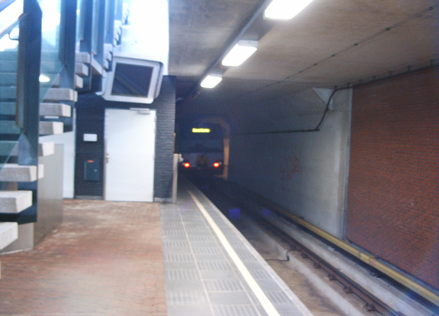

Defecte metro op Troelstralaan zorgt voor vertragingen en meer...
- vrijdag 12 december 2008 09:06
- Geschreven door Joachim
Vanmiddag strandde omstreeks 13.15 uur metrostel 5207 met bijwagen net buiten station Troelstralaan, spoor 2. De metro had al een rit van de Akkers naar Troelstralaan achter de rug, waarbij het stel diverse keren totaal stilstond, en er geen beweging meer in te krijgen was.
De technische dienst van depot 's-Gravenweg moest er aan te pas komen om het metrostel nabij station Troelstralaan weer aan de praat te krijgen. Met een enkel metrostel (5219) werd richting Troelstralaan gereden. Op keersectie Vijfsluizen werd gekeerd, om zo de 5219 achter de defecte 5207 te koppelen, die op spoor 2 stond. Rond 14.00 werd het metrostel weggesleept door de 5219 naar depot 's-Gravenweg.
Door de situatie werd de metrodienst tussen keersecties Vijfsluizen en Troelstralaan omgeleid via spoor 1. Er ontstonden kleine vertragingen. Vermoedelijk zijn de passagiers door RET-personeel uit het metrostel gehaald en via het looppad begeleid naar station Troelstralaan.

De 5207 stond net buiten het station, even later zou de 5219 hier achter koppelen om zo de defecte 5207 naar het depot te rijden. (foto: M-Stuff)
Fiets
Nabij station Schenkel werd vanmiddag rond 14.00 uur een fiets gevonden in het spoor. De fiets was blijkbaar al geraakt door een metrostel, aangezien slechts de wielen er nog lagen. RET-personeel heeft de fiets(delen) verwijderd. Om de veiligheid van het personeel te garanderen werden metro's op Capelsebrug en Prinenslaan tijdelijk stilgezet met een vertreksverbod, zodat de baan ter hoogte van station Schenkel veilig was.
Beurs-Erasmuslijn
Rond 15.00 uur vanmiddag moest de brandweer uitrukken naar station Beurs-Erasmuslijn. Volgens de RET zou er smeulend papier op de baan liggen. De brandweer, die uitrukte met klein materieel, bluste het brandje. Om 15.10 uur kon de brandweer inrukken naar de kazerne. Al met al viel het mee. Het metroverkeer ondervond nauwelijks hinder van het incident.